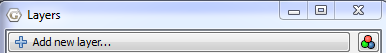
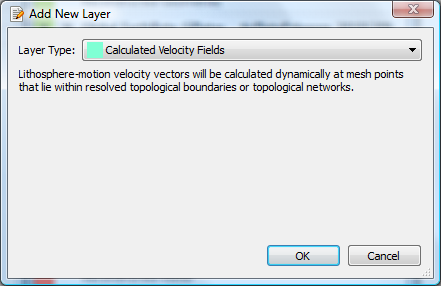
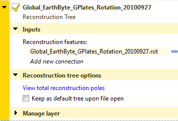
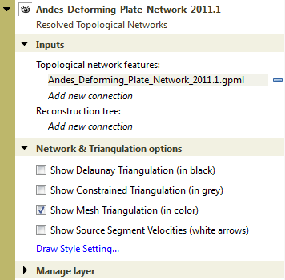

Introduction
This chapter covers the layers system, how they are created, what they do, how they are visualised and the various types of layers.
Layers in GPlates
Layers provide a way to connect the various processing capabilities of GPlates to data sources (such as loaded feature collections). The outputs of these layers can then be visualised directly in the globe and map views and/or passed to the input of other layers for further processing.
What’s the difference between a layer and a file?
A file contains a collection of features (a feature collection).
A layer processes one or more inputs into an output. Inputs to a layer can include, but are not necessarily restricted to, feature collections. For example some types of layers, such as the Reconstructed Geometries layer, accept both feature collections and the output of another layer.
In the case of the Reconstructed Geometries layer:
-
the feature collection input contains (in the feature properties themselves) both the geometries to be reconstructed and the information on how to reconstruct them (such as reconstruction plate ID),
-
the layer input (in this case the output of a Reconstruction Tree layer) contains the rotations needed to perform the reconstruction,
-
the layer itself does the actual reconstruction and generates the reconstructed geometries, and
-
the layer output contains the reconstructed features.
The reason the rotations come from the output of another layer rather than a feature collection (containing rotation features) is because a rotation hierarchy needs to be generated from the rotation features themselves and so this process is performed by a different type of layer (the Reconstruction Tree layer). See the More on Reconstructions chapter for more information about rotation hierarchies.
The output of most types of layers (exceptions include Reconstruction Tree layers) contain geometries and hence can be visualised in the globe and map views.
The Layers dialog
The Layers dialog is usually displayed automatically when you first load a feature collection. To show/hide the dialog, select the Show Layers menu item in the Window menu or use the Ctrl+L shortcut key.

The Layers dialog contains all layers and is the central place to configure layer visibility, draw order, input connections and layer-specific options.

The collapsed view of each layer in the dialog shows a layer name, type and colour. The type and colour are associated (for example, a green layer is always of type Reconstructed Geometries). The layer name depends on how the layer was created (see the Creating layers section for more details).
Changing layer visibility
The visibility of each layer can be individually disabled (or enabled) by clicking the
 icon to the left of the layer name.
icon to the left of the layer name.
|
|
Some types of layers (such as the Reconstruction Tree layer) do not have a visibility icon
|
Each layer contains a small black arrow
 that can be clicked on to expand the layer and show the input connections and any layer-specific options. Once expanded you can click on the
that can be clicked on to expand the layer and show the input connections and any layer-specific options. Once expanded you can click on the
 symbol to collapse the layer again.
symbol to collapse the layer again.
Changing layer input connections
Every layer has an "Input channels" section that displays the current inputs and also allows the user add, remove or change inputs to each layer. Each layer type can have different types of input channels. In the Reconstructed Geometries example above there are two types of input channel, one labelled "Reconstructable features" and the other labelled "Reconstruction tree". The types of input channel are specific to each layer type and will be covered in greater detail in the Types of layers section.
Input connections can be:
-
added using the "Add new connection" option, and
-
removed using the
 symbol to the right of each existing connection.
symbol to the right of each existing connection.
Enabling and disabling a layer
In the "Manage layer" section of each layer you can Enable and Disable the layer.
|
|
When a layer is disabled it is greyed out in the Layers dialog and cannot be changed until it is enabled again. |
The "Disable layer" and "Enable layer" options determine if a layer does any processing or not. If a layer is disabled then that layer is effectively switched off and nothing is generated or output by that layer. It also means nothing will be drawn in the globe and map views for that layer (regardless of that layer’s visibility). And it means any other layer receiving input from that layer will receive nothing.
|
|
For example, if the visibility of a Reconstructed Geometries layer is turned off but the layer is still enabled then feature geometries are still reconstructed internally by GPlates for that layer (they are just not displayed). This is useful if you want the output of a Reconstructed Geometries layer to feed into the input of another layer but you don’t want the reconstructed geometries to be visible. Currently there aren’t any good examples of when you might want to do this but there will be in the near future. |
How do I make one layer draw on top of another?
Layers are drawn onto the globe and map views in the order in which they are displayed in the Layers dialog. Layers at the top are drawn on top of layers below them.
To change the visual ordering of a layer simply drag it onto another layer.
|
|
Either the unexpanded part of the layer (the part containing the layer name and type) or the coloured bar on the left (expanded or unexpanded) can be grabbed in this way. You can still grab a layer when it is expanded - you just need to grab in those areas of the layer. Typically the mouse cursor changes to a hand grab icon over areas that allow layer dragging. |
In this example, the raster layers are at the bottom and hence are drawn underneath the other layers. And the user has selected only one raster to be visible (the visibility icon
 is on for only one raster layer).
is on for only one raster layer).
|
|
The layer positions of Reconstruction Tree layers are not important since they produce no visible output. |
Previous versions of GPlates required layers containing vector geometries to be drawn on top of any raster layers otherwise the raster layers would obscure them (especially if they were global rasters). However GPlates now supports adjusting raster transparency (and intensity) individually per raster layer - see Reconstructed Raster Layer for more details. The following image shows a raster layer (with opacity set to 0.64) on top of layer containing coastlines - the coastlines are under the raster but are partially visible through it.

Creating layers
There are two ways in which a layer can be created. Either automatically by GPlates when the user loads a feature collection or explicitly when the user creates a new layer.
Automatically created layers
When you load a feature collection usually one (or more) layers are created.
Loading these feature collections…

…will result in these layers being automatically created (in this case one layer per feature collection)…

|
|
The layer name is obtained from the feature collection filename. |
|
|
Unloading
|
In some situations loading one feature collection can create two layers.
Here one feature collection containing both Topological Closed Plate Polygon features and the regular features referenced by them is loaded…
…and two layers are automatically created…
One layer reconstructs the regular features that are referenced by the plate polygons and the other layer does the work of stitching the features together, intersecting them and creating the dynamic polygon boundary.
|
|
Because there are two layers, the dynamic plate polygon boundaries can be made visible while the features used to construct the dynamic boundary can be made invisible. |
Layers created by the user
Layers can be explicitly created by the user.

After selecting Add new layer… at the top of the Layers dialog you can then select the type of layer you want to create. Here is example of creating a new Calculated Velocity Fields layer.

A new layer is then created and inserted at the top of the layer stack.

|
|
The layer name will be "Layer" suffixed with an integer (for example, "Layer 21"). It is not based off a feature collection filename because it is not automatically created when a feature collection is loaded. |
|
|
The new layer’s input channels are all unconnected and you will need to make the connections explicitly in order for the layer to function correctly. It is OK to leave a layer in an unconnected state - it will then simply do nothing. |
Types of layers
There are various types of layers each represented by a different colour in the Layers dialog.
Each layer provides a different type of functionality, has different types of inputs and generates different outputs.
Reconstruction Tree Layer
This layer combines rotation features from one or more feature collections to form a reconstruction tree or rotation hierarchy (see the More on Reconstructions chapter for more information about rotation hierarchies). This rotation hierarchy can then determine the equivalent absolute rotation of a plate relative to the top of the hierarchy (the anchored plate).
Reconstruction Tree Options
A Reconstruction Tree layer has the following configuration options:

Since this type of layer does not produce visible geometries it does not have the visibility icon
 to enable/disable visibility.
to enable/disable visibility.
Instead it has the icon
 to set/indicate the default Reconstruction Tree layer - see Default Reconstruction Tree below.
to set/indicate the default Reconstruction Tree layer - see Default Reconstruction Tree below.
The Input channels section has one type of input:
-
"Reconstruction features" which is a list of input feature collections that contain rotation features.
|
|
More than one feature collection can be connected to the input of a Reconstruction Tree layer. For example, one feature collection may represent absolute rotations while another represents relative rotations. When they are both input to the same Reconstruction Tree layer they are combined together inside the layer to form a single rotation hierarchy. |
|
|
If there are no rotation features in any input feature collections then no rotation hierarchy is generated which means nothing using this Reconstruction Tree layer will rotate or reconstruct. |
|
|
If an input feature collection contains both rotation and non-rotation features then the non-rotation features are simply ignored (by the Reconstruction Tree layer) since they cannot contribute to a rotation hierarchy. The non-rotation features will however have resulted in the automatic creation of a Reconstructed Geometries layer (along with the automatic creation of this Reconstruction Tree layer). So the non-rotation features won’t be ignored altogether - they are just ignored by the Reconstruction Tree layer. In turn, the Reconstructed Geometries layer will ignore the rotation features. |
View Total Reconstruction Poles displays a dialog to view a variety of information about the reconstruction poles and the plate hierarchy for that particular Reconstruction Tree layer (at the current reconstruction time). See the Reconstructions chapter for more information on that dialog.
Default Reconstruction Tree
One fundamental difference between Reconstruction Tree layers and other types of layers is you can set a default Reconstruction Tree layer. Only one Reconstruction Tree layer can be the default and you can tell which one is the default because it will be the only layer with the
 icon visible next to the layer name.
icon visible next to the layer name.
Selecting another Reconstruction Tree layer with no visible
 icon will make it the new default.
icon will make it the new default.
When a feature collection (containing rotation features) is loaded, its associated Reconstruction Tree layer becomes the new default Reconstruction Tree layer. If you want your previous default Reconstruction Tree layer to remain as the default (when subsequent rotation files are loaded) you will need to check the Keep as default tree upon file open check box. This prevents subsequently loaded Reconstruction Tree layers from becoming the default.
The default Reconstruction Tree layer is only applicable if another layer (such as a Reconstructed Geometries layer) requires a Reconstruction Tree input and has not explicitly connected one to its input.
|
|
If all layers with a Reconstruction Tree input have an explicit user connection then the default Reconstruction Tree layer effectively does not apply. However as soon as the user disconnects a Reconstruction Tree input on any layer, the default Reconstruction Tree layer will again apply. |
Reconstructed Geometries Layer
This layer reconstructs features from one or more feature collections using the current reconstruction time. Typically for each input feature geometry there is a corresponding reconstructed geometry (a rotated version of the present-day geometry). This layer is designed to handle different reconstruction methods in the one layer type. Examples of reconstruction methods include rigid plate rotation and half-stage rotation (such as at a Mid-Ocean Ridge).
In order to rotate the present-day geometries of features, a rotation hierarchy is required and this is obtained by connecting a Reconstruction Tree layer.
Reconstructed Geometries Options
A Reconstructed Geometries layer has the following configuration options:
The visibility icon
 determines whether the reconstructed geometries are drawn in the globe and map views.
determines whether the reconstructed geometries are drawn in the globe and map views.
The Input channels section has two types of input:
-
"Reconstructable features" is one or more feature collections containing reconstructable features. These are features that have geometry and have properties that provide enough information, aside from a rotation hierarchy, for GPlates to be able to reconstruct their geometry (such as a reconstruction plate ID).
-
"Reconstruction tree" is zero or one Reconstruction Tree layer. This input layer provides the rotation hierarchy that enables GPlates to reconstruct the features in the Reconstructable features input channel. If there is no Reconstruction Tree layer connected then the default Reconstruction Tree layer is used (see the section on Reconstruction Tree Layer for more details on the default Reconstruction Tree).
The following is an example of an implicit connection to the default Reconstruction Tree layer (because there is no explicit connection)…

…if you then changed which layer was the default Reconstruction Tree layer then the new default would be implicitly connected. This is useful if you have a lot of Reconstructed Geometries layers open and you want to change the Reconstruction Tree layer that they all use without having to reconnect each layer individually. In this case you would just need to change the default Reconstruction Tree layer.
On the other hand if you explicitly connect a Reconstruction Tree layer then the default is ignored (until you explicitly disconnect it).

Note that, in this example, "Add new connection" is disabled (and greyed out) since only one Reconstruction Tree input connection is allowed. You can still have multiple rotation feature collections as input to a Reconstruction Tree layer though.
Set VGP visibility displays a dialog to specify how Virtual Geomagnetic Pole (VGP) features are displayed. This option only applies to VGP features - for other feature types these settings are ignored.
Draw Style Setting displays a dialog to control the colouring of features - see Manage Colouring
The Filled polygons check box can be selected to colour fill features containing polygon geometries. Currently the colour of each filled polygon will be the same as the polygon outline colour (ie, same colour as unfilled polygons).

The following image shows filled polygons for the static polygons in the GPlates sample data.
Reconstructed Raster Layer
This layer can display a single raster feature (containing a single raster image or a time-dependent sequence of raster images) in the following configurations:
-
a raster (or time-dependent raster sequence) that is not reconstructed, or
-
a raster (or time-dependent raster sequence) that is reconstructed using a set of static polygons, or
-
a raster (or time-dependent raster sequence) that is reconstructed using a set of static polygons and an age grid.
|
|
Rasters are displayed at the highest resolution available for the current monitor screen size and amount of view zoom. As you zoom in, higher resolutions versions of the original raster are progressively loaded and displayed until the resolution of the original raster is exceeded. |
|
|
Rasters are displayed both the Globe and Map views. Previous versions of GPlates only displayed rasters in the Globe view. |
Reconstructed Raster Options
A Reconstructed Raster layer has the following configuration options:

The visibility icon
 determines whether the raster is drawn in the globe and map views.
determines whether the raster is drawn in the globe and map views.
The Input channels section has three types of input:
-
"Reconstruction tree" is zero or one Reconstruction Tree layer. This input layer provides the rotation hierarchy that enables GPlates to reconstruct the static polygon features in the Polygon features input channel. If there is no Reconstruction Tree layer connected then the default Reconstruction Tree layer is used (see the section on Reconstruction Tree Layer for more details on the default Reconstruction Tree).
-
"Reconstructed polygons" is zero, one (or more) Reconstructed Geometries layers. The features in the Reconstructed Geometries layers should contain static polygon features (the static meaning the polygon shapes don’t change) and should contain a reconstruction plate ID property on each polygon feature. If there are no polygon features then the raster is not reconstructed.
-
"Age grid raster" is zero or one Reconstructed Raster layer containing an age-grid raster. Each pixel of the age grid raster is a floating-point value representing the age of present-day oceanic crust.
|
|
Previous versions of GPlates required the age grid to be in a special age grid layer type and required a special band name for the age grid raster. GPlates no longer has these requirements - an age grid raster is no longer a special case raster - it is just another raster like any other. |
Opacity controls the transparency of the raster allowing layers drawn underneath a raster layer to become visible through the raster to varying degrees.
Intensity differs from transparency in that it only darkens the raster but does not allow layers underneath to become visible through the raster.

If the raster is non-RGBA (such as a floating-point NetCDF raster) then there are extra options in the Raster options section related to colour palettes.

In the "Raster options" section you can configure the colour palette, for a specific raster band, used to convert each floating-point pixel value to an RGB(A) colour value by selecting a CPT file. Note that this only applies to rasters that are not already in RGB(A) format - see the Data File Types chapter for more information on raster formats. CPT files come in two forms - categorical and regular. Categorical is typically used for non-numerical data (where interpolation of values is undefined). Regular is for numerical, continuously-varying data and is more applicable for rasters. The regular CPT file allows the user to map floating-point pixel values to colours with linear interpolation inbetween.
Selecting "Use Default" will map floating-point pixel values to a small set of pre-defined arbitrary colours. Pixel values two standard deviations away from the mean pixel value will be continously mapped to the small range of colours (with linear interpolation between the colours).
|
|
There is no colour palette option for an RGBA raster. |
Configuring a raster that is not reconstructed
This is the default configuration where no input channels are connected (except the raster feature itself).

The raster is rendered as a non-rotating (or non-reconstructing) georeferenced raster (in this example a global raster). Changing the reconstruction time makes no difference unless the raster feature is a time-dependent raster in which case the image itself will change over time (but will still remain stationary on the globe)…

Configuring a raster that is reconstructed using static polygons
This configuration does everything the above configuration does (including resolving a time-dependent raster over time) in addition to reconstructing the raster.
The reconstruction is peformed using a set of static polygons. Conceptually the single raster image (or time-resolved raster image for a time-dependent sequence) is cookie cut into multiple polygon-shaped pieces using the present-day location of each static polygon. Then each polygon is reconstructed using its reconstruction plate ID. As each polygon is reconstructed back in time it rotates independently (for polygons with different plate IDs) and transports its cookie-cut piece of raster image with it.
Only polygons whose valid time range (between age of appearance and disappearance) includes the current reconstruction time will be rendered. This is most noticeable near mid-ocean ridges where long thin polygons adjacent the ridge appear/disappear as you go fowards/backwards in time to simulate accretion or crust material at the mid-ocean ridge. This is also the reason why a reconstructed global raster covers the entire globe at present-day but covers a progressively smaller area of the globe as you reconstruct back in time.
|
|
Currently polygons (and their associated cookie-cut raster pieces) with higher plate IDs are drawn on top of polygons with lower plate IDs. This is because higher plate IDs tend to be further from the anchor plate in the plate circuit - although this is not necessarily the case. |
This configuration is obtained by connecting the "Reconstructed polygons" input channel to a Reconstructed Geometries layer containing static polygons.

The resulting reconstructed raster…

…note the thin gap along the mid-ocean ridge between South America and Africa. This is an example of a thin ridge-aligned polygon popping out, as you reconstruct backwards in time, because its time of appearance is after the current reconstruction time (34Ma in the example).
|
|
Currently self-intersecting polygons (even if only negligbly intersecting) are ignored which can result in "holes" in the raster. The static polygons GPML file distributed in the GPlates sample data currently contains no self-intersecting polygons. In a future release GPlates will be modified to handle self-intersecting polygons. |
Configuring a raster that is reconstructed using static polygons and present-day age grid
This configuration builds on the previous configuration "Configuring a raster that is reconstructed using static polygons" by adding an age-grid raster.
When an age grid is not used the static polygons pop in and out as whole polygons when the reconstruction time changes. Thus the subduction and accretion of oceanic crust is simulated using lots of thin polygons with small differences in age. The age grid takes this even further by providing per-pixel (rather than per-polygon) age comparisons to provide a more continuous transition at plate boundaries. Here the age of the pixel is used instead of the age of the polygon.
|
|
Pixel values, in the age grid raster, that are NaN (a special floating-point value representing "Not a number") represent non-oceanic crust. For these pixels the polygon age is used instead of the pixel age. So basically the pixel age is used only where it is valid. |
|
|
The per-pixel age comparison test is currently performed on the graphics card where it is significantly faster. Hence the cost to interactivity, of age grids, is small. |
|
|
Changing the rotation model requires re-generating the age grid - this process is performed outside GPlates. |
This configuration is obtained by connecting the "Reconstructed polygons" input channel to a Reconstructed Geometries layer containing static polygons and connecting the "Age grid raster" input channel to a Reconstructed Raster layer containing an age grid.

The resulting reconstructed raster (with the assistance of an age grid)…
…note the absense of the thin gap along the mid-ocean ridge between South America and Africa. This is due to the per-pixel age comparison (as opposed to the per-polygon age comparison).
|
|
There will still be small gaps of varying size if there are differences in the rotation model used to generate the age grid (offline) and the rotation model used to reconstruct the static polygons. |
|
|
With previous versions of GPlates the resolution displayed on screen was the lowest of the source raster and the age grid raster - which meant if you had an age grid that was lower resolution than your source raster then your source raster could never be displayed at its highest resolution (no matter how much you zoomed into the view). This is no longer a restriction and the highest resolution of both source raster and age grid raster is now available. |
|
|
Even though the "Age grid raster" input channel references a Reconstructed Raster layer the age grid is only sampled at present day (0Ma). |
|
|
It is possible to "reconstruct" an age grid raster and use it to assist with the reconstruction of another raster at the same time. |
Resolved Topological Closed Plate Boundaries Layer
This layer generates dynamic plate polygons by closing the plate boundary at each reconstruction time. The plate boundary consists of a sequence of regular features whose geometry is reconstructed and then stitched together to form a closed polygon region for each plate polygon feature. See the Topology Tools chapter for more information of topological features.

Resolved Topological Closed Plate Boundaries Options
A Resolved Topological Closed Plate Boundaries layer has the following configuration options:

The visibility icon
 determines whether the resolved topological closed plate polygons are drawn in the globe and map views.
determines whether the resolved topological closed plate polygons are drawn in the globe and map views.
Here is an example of turning off the visibility of the Reconstructed Geometries layer so that only the topological polygons are visible.

The Input channels section has two types of input:
-
"Topological closed plate boundary features" is one (or more) feature collections containing topological closed plate polygon features. These are features topologically reference regular features and form a continuously closing dynamic plate polygon from them through geological time.
-
"Reconstruction tree" is zero or one Reconstruction Tree layer.
Draw Style Setting displays a dialog to control the colouring of features - see Manage Colouring
The Filled polygons check box can be selected to colour fill the topological polygon geometries. Currently the colour of each filled polygon will be the same as the polygon outline colour (ie, same colour as unfilled polygons).
|
|
The regular features, that make up the boundaries of each topological plate polygon, are reconstructed in another layer - a Reconstructed Geometries layer. |
|
|
The user does not need to make a connection to the Reconstructed Geometries layer. |
Resolved Topological Networks Layer
This layer generates dynamic plate polygons in a manner similar to a Resolved Topological Closed Plate Boundaries layer with the addition of deforming the plate region. See the Topology Tools chapter for more information of topological features.

Resolved Topological Networks Options
A Resolved Topological Networks layer has the following configuration options:

The Input channels section has two types of input:
-
"Topological network features" is one (or more) feature collections containing topological network features.
-
"Reconstruction tree" is zero or one Reconstruction Tree layer.
The various Show… options under Network & Triangulation options are used to display different aspects of the triangulation generated in the deforming region. These are mostly debugging and visualisation aids.
Draw Style Setting displays a dialog to control the colouring of features - see Manage Colouring
Calculated Velocity Fields Layer
This layer calculates plate velocities at a set of static locations. Here static means non-rotating (the points do not move across the globe as the reconstruction time changes).
The velocities are calculated by determining which topological closed plate polygon contains each static point location. Then the finite rotation corresponding to that plate polygon’s reconstruction plate ID is used to calculate the velocity at the static point location.
This type of layer is automatically created when a feature collection containing features of type gpml:MeshNode is loaded. These features contain multi-point geometry that defines the set of static locations at which to calculate velocity.
An associated Reconstructed Geometries layer is also created to visualise the point locations. The Calculated Velocity Fields layer visualises the velocities as arrows (longer arrows represent larger velocities).
The velocity arrows are not drawn at every static point location. Instead they are spaced apart so that they are minimum distance from each other on the "screen" (on the computer monitor). This so they can be distinguished visually even for very dense meshes.

|
|
You can also explicitly create a new Calculated Velocity Fields layer and connect its input channels. This is useful for calculating velocities at the points in a multi-point, polyline or polygon features - for the purpose of velocity calculations each geometry is viewed simply as a collection of points (regardless of whether it’s a polyline or polygon or not). |
Calculated Velocity Fields Options
A Calculated Velocity Fields layer has the following configuration options:

The visibility icon
 of the Calculated Velocity Fields layer determines whether the velocity arrows are drawn in the globe and map views. And the visibility icon
of the Calculated Velocity Fields layer determines whether the velocity arrows are drawn in the globe and map views. And the visibility icon
 of the Reconstructed Geometries layer determines whether the set of static points (at which velocities are calculated) are drawn.
of the Reconstructed Geometries layer determines whether the set of static points (at which velocities are calculated) are drawn.
The Input channels section has three types of input:
-
"Mesh-point Features" is one (or more) feature collections containing features of type gpml:MeshNode (or other feature types if you explicitly created your own velocity layer) representing the set of static point locations at which to calculate velocity.
-
"Reconstruction tree" is zero or one Reconstruction Tree. The Reconstruction Tree layer is used to calculate velocities. Note that this should actually be the rotation tree used by the Resolved Topological Closed Plate Boundaries layer (the one connected on the "Source Features" input channel). This will be fixed in a future release.
-
"Reconstructed static/dynamic polygons/networks* is one (or more) layers of type Reconstructed Geometries (containing static polygons), Resolved Topological Closed Plate Boundaries (containing dynamic polygons) and/or Resolved Topological Networks (containing deforming dynamic polygons) that generates the "surfaces" that the velocities are calculated in.
|
|
When a Calculated Velocity Fields layer is automatically created (when the appropriate feature collection is loaded) GPlates will search for all Resolved Topological Closed Plate Boundaries and Resolved Topological Networks layers and connect their output to the input of the new Calculated Velocity Fields layer. |
|
|
When a Resolved Topological Closed Plate Boundaries (or Resolved Topological Networks) layer is automatically created (when the appropriate feature collection is loaded) GPlates will search for all Calculated Velocity Fields layers and connect their input to the output of the new Resolved Topological Closed Plate Boundaries (or Resolved Topological Networks) layer. |